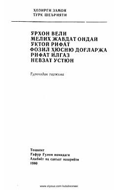

HZXX asr turk she'riyatining eng sara namunalari jamlangan she'riy to'plam.
Ushbu to'plam XX asr turk she'riyatining yirik namoyandalari, jumladan Orhon Veli, Melih Javdat Onday va O'ktoy Rifat ijodidan saralangan she'rlarni o'z ichiga oladi. Kitob turk adabiyotidagi realizm va yangi oqim vakillarining o'ziga xos uslubi hamda insonparvarlik g'oyalarini o'zbek kitobxonlariga taqdim etadi.